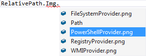

The FileSystem type provider
This tutorial shows the use of the file system type provider. It allows to browse your file system via Intellisense and provides compile time checks for directories and files. The FileSystem type provider invalidates itself whenever any child dirs/files changed in any way.
1: 2: 3: 4: 5: 6: 7: 8: 9: 10: |
// reference the type provider dll #r "FSharp.Management.dll" open FSharp.Management // Let the type provider do it's work type Users = FileSystem<"C:\\Users"> // now you have typed access to your filesystem Users.``All Users``.Path val it : string = "C:\Users\All Users\" |

The FileSystem type provider also allows a second, optional parameter to be specified which provides a relative root path for the returned paths. The above example could be written without referencing the drive in the resulting paths via:
1: 2: 3: 4: 5: 6: |
// Let the type provider do it's work type UsersWithoutDrive = FileSystem<"C:\\Users", relativeTo = "C:"> // now you have typed access to your filesystem UsersWithoutDrive.``All Users``.Path val it : string = "Users\All Users\" |
A third, optional "watch" parameter can be used to specify that the file system should be watched for changes, and the type provider invalidated if new files are added or removed. This is false by default, which means adding new files will not show up immediately without invalidating the type provider by some external mechanism, such as restarting the IDE.
1: 2: 3: 4: 5: 6: 7: |
// Create a type provider that automatically watches for new files or changes to folders type UsersWithChanges = FileSystem<"C:\\Users", watch = true> // Now you have typed access to your filesystem UsersWithChanges.``All Users``.Path val it : string = "C:\Users\All Users\" |
Relative paths
For web frameworks it's interesting to reference resources like images. With the help of the FileSystemProvider we can browse the project via Intellisense and get compile time safety for relative paths.
Note that the RelativePath type provider also supports the optional "watch" parameter, with false as the default.

1: 2: 3: 4: 5: 6: 7: 8: 9: 10: |
// reference the type provider dll #r "FSharp.Management.dll" open FSharp.Management // Create a type relative to the project's root path type Relative = RelativePath<".", watch = false> // Browse the project Relative.``..``.files.img.``PowerShellProvider.png`` // [fsi:val it : string = "..\files\img\PowerShellProvider.png" |
Full name: FileSystemProvider.Users
Full name: FSharp.Management.FileSystem
Full name: FileSystemProvider.UsersWithoutDrive
Full name: FileSystemProvider.UsersWithChanges
Full name: FileSystemProvider.Relative
Full name: FSharp.Management.RelativePath
Full name: Microsoft.FSharp.Core.Operators.( .. )